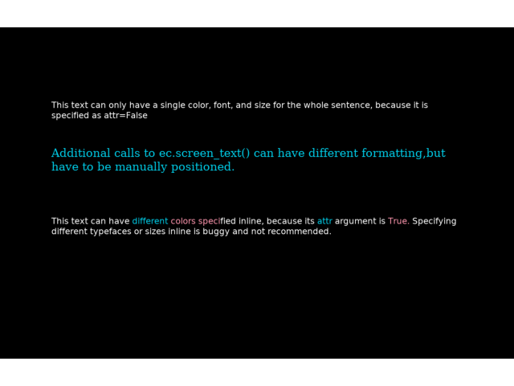

Note
Go to the end to download the full example code.
Display text with different formatting methods#
This example demonstrates differences between the Text and AttrText classes.
exp_name: textDemo
date: 2025-02-24 19_44_23.417209
file: /home/circleci/project/examples/experiments/formatted_text.py
participant: foo
session: 001
2025-02-24 19:44:23,417 - INFO - Expyfun: Using version 2.0.0.dev0 (requested dev)
2025-02-24 19:44:23,418 - INFO - Expyfun: Setting up sound card using pyglet backend with 2 playback channels
2025-02-24 19:44:23,601 - WARNING - Expyfun: Mismatch between reported stim sample rate (24414) and device sample rate (44100.0). Experiment Controller will resample for you, but this takes a non-trivial amount of processing time and may compromise your experimental timing and/or cause artifacts.
2025-02-24 19:44:23,601 - INFO - Expyfun: Setting up screen
2025-02-24 19:44:23,632 - EXP - Expyfun: Set screen visibility True
2025-02-24 19:44:23,646 - INFO - Initialized [1400 900] window on screen XlibScreen(display=<pyglet.canvas.xlib.XlibDisplay object at 0x7fc7c7643490>, x=0, y=0, width=1400, height=900, xinerama=0) with DPI 69.73
2025-02-24 19:44:23,646 - INFO - Expyfun: Initializing dummy triggering mode
2025-02-24 19:44:23,647 - INFO - Expyfun: Initialization complete
2025-02-24 19:44:23,648 - EXP - Expyfun: Participant: foo
2025-02-24 19:44:23,648 - EXP - Expyfun: Session: 001
2025-02-24 19:44:23,863 - INFO - Expyfun: Exiting
2025-02-24 19:44:23,866 - EXP - Expyfun: Audio stopped and reset.
# Author: Dan McCloy <drmccloy@uw.edu>
#
# License: BSD (3-clause)
from expyfun import ExperimentController, analyze, building_doc
from expyfun.visual import _convert_color
print(__doc__)
# Colors
blue = _convert_color("#00CEE9")
pink = _convert_color("#FF97AF")
white = (255, 255, 255, 255)
# Text
one = (
"This text can only have a single color, font, and size for the whole "
"sentence, because it is specified as attr=False"
)
two = (
"Additional calls to ec.screen_text() can have different formatting,"
"but have to be manually positioned."
)
thr = (
f"This text can have {{color {blue}}}different {{color {pink}}}colors "
f"speci{{color {white}}}fied inline, because its {{color {blue}}}attr "
f"{{color {white}}}argument is {{color {pink}}}True. {{color {white}}}"
"Specifying different typefaces or sizes inline is buggy and "
"not recommended."
)
fou = "Press any key to change all the text to pink using .set_color()."
fiv = "Press any key to quit."
max_wait = float("inf") if not building_doc else 0.0
with ExperimentController(
"textDemo", participant="foo", session="001", output_dir=None, version="dev"
) as ec:
ec.wait_secs(0.1) # without this, first flip doesn't show on some systems
txt_one = ec.screen_text(one, pos=[0, 0.5], attr=False)
txt_two = ec.screen_text(
two, pos=[0, 0.2], font_name="Times New Roman", font_size=32, color="#00CEE9"
)
txt_thr = ec.screen_text(thr, pos=[0, -0.2])
screenshot = ec.screenshot()
ec.screen_prompt(fou, pos=[0, -0.5], max_wait=max_wait)
for txt in (txt_one, txt_two, txt_thr):
txt.set_color("#FF97AF")
txt.draw()
ec.screen_prompt(fiv, pos=[0, -0.5], max_wait=max_wait)
analyze.plot_screen(screenshot)
Total running time of the script: (0 minutes 0.527 seconds)